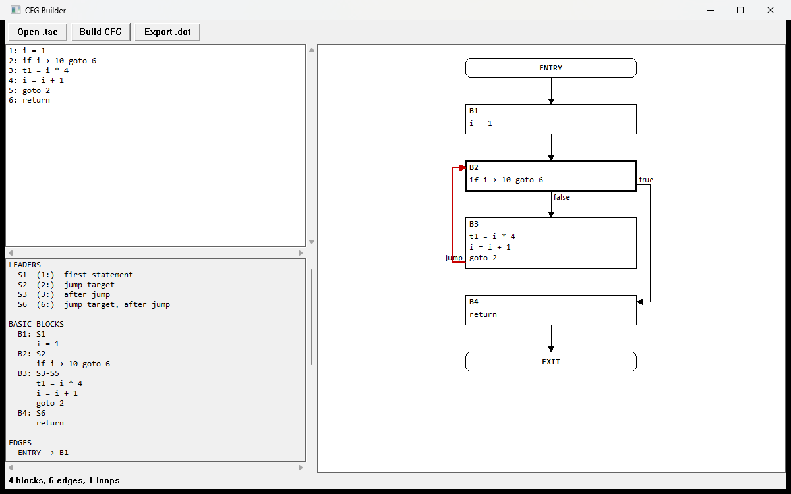
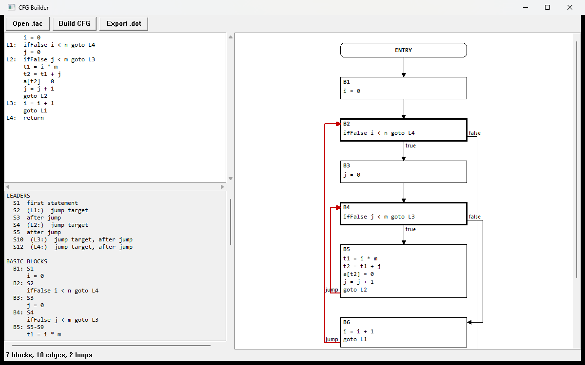

Control Flow Graph (CFG) Builder — viva sheet
Project 9. Code: tac.l, cfg.c, cfg.h, gui.c, test_cfg.c in D:\files\stud\compiler\project-cfg-builder. Every output on this sheet was produced by the actual program. Back: Interview Prep
1. 30-second pitch
tac.l, splits the code into tokens. Our C code then finds the leaders, splits the program into basic blocks, and joins them with edges for jumps and fall-through. On that graph it computes dominators, finds back edges and natural loops, and flags unreachable code. A Windows GUI draws the graph, prints a full report, and can export it as a Graphviz file. This is the loop-detection step from Unit 5 that code optimization is built on."2. Project at a glance
| Item | Value |
|---|---|
| Project | No. 9: Control Flow Graph (CFG) Builder. Platform: C |
| Objective | Build a structural representation of how control flows within a program, as a stepping stone to compiler optimization |
| Input | Three-address code (TAC), typed into the input box or opened from a .tac file |
| Output | Leaders, basic blocks, labelled edges, dominator sets, natural loops, unreachable blocks, the drawn graph, a Graphviz .dot file |
| Lexer | tac.l, compiled by flex into lex.yy.c |
| CFG logic | cfg.c (≈335 lines) and cfg.h (types) |
| GUI | gui.c: Win32 API window, graph drawn with GDI |
| Tests | test_cfg.c: 22 assert-based test functions on 5 samples and the error cases |
| Tools | flex 2.6.4, MinGW-w64 gcc 16.2, Windows 11 |
| Limits | 500 statements, 255 characters per line, 31 characters per label |
Pipeline
- Lexical analysis:
yylex()fromtac.lreturns tokens (label, keyword, word, operator, space, newline). - Statements:
cfg_build()groups the tokens of one line into aStmtand decides its kind: plain, goto, if, ifFalse or return. - Resolve labels: every jump target is matched to a statement, and duplicate or undefined labels are errors.
- Leaders: mark the first statement of every basic block.
- Basic blocks: each one runs from a leader up to the statement before the next leader.
- Edges: added from the last statement of each block.
- Analysis: reachability by depth-first search, then dominators, back edges and natural loops.
- Output: the text report (
cfg_report), the Graphviz file (cfg_dot) and the drawn graph (gui.c).
3. Where a CFG fits in a compiler
Phases of a compiler:
source → lexical analysis → syntax analysis → semantic analysis
→ intermediate code generation (three-address code)
→ code optimization ← the CFG is built here
→ code generation → target code
- The optimizer works on intermediate code, not source. It first needs to know which statements always run together (basic blocks) and which block can follow which (edges). That graph is the CFG.
- Loop optimizations such as code motion, strength reduction and induction-variable elimination need to know where the loops are. The CFG plus dominators answers that.
- Dead-code elimination needs to know which blocks can never run. That is reachability on the CFG.
- Our project uses lex (front end) to read TAC (the output of the middle phase) and does the first step of the optimizer.
4. Input: three-address code
t1 = i * 4. Control flow uses only goto and conditional jumps, so the jumps are explicit. That is what makes it easy to build a CFG from it.| Kind | Form | Example | Ends a block? |
|---|---|---|---|
| GOTO | goto T | goto L2 | Yes |
| IF | if <cond> goto T | if i > 10 goto 6 | Yes |
| IFFALSE | ifFalse <cond> goto T | ifFalse a < b goto L3 | Yes |
| RETURN | return [x], halt, exit | return t1 | Yes |
| PLAIN | anything else | t1 = i * 4, a[t2] = 0, param x | No |
- Format:
[label:] statement, one per line. A label is a number (3:) or a name (L1:). A label alone on a line belongs to the next statement. //and#start comments. Assignments may use=or:=.if(i > 10) goto L2also works without a space.ifFalse x goto Ljumps when the condition is false. The Dragon Book uses it to translatewhileandifstatements.
Sample while_loop.tac, which is i = 1; while (i <= 10) { t1 = i*4; i = i+1; } translated to TAC:
1: i = 1 2: if i > 10 goto 6 3: t1 = i * 4 4: i = i + 1 5: goto 2 6: return
5. Lexical analysis with lex (tac.l)
flex tac.l writes lex.yy.c, which contains the function yylex(). Each call returns the next token, and the matched text is in yytext.A lex file has three parts separated by %%: definitions, rules, and user code.
ID [A-Za-z_][A-Za-z0-9_]*
NUM [0-9]+
%%
^[ \t]*({ID}|{NUM})[ \t]*":"/[^=] { return T_LABEL; }
"//".*|"#".* { /* comment: skip */ }
"goto" { return T_GOTO; }
"ifFalse" { return T_IFFALSE; }
"if" { return T_IF; }
"return"|"halt"|"exit" { return T_RETURN; }
{ID}|{NUM} { return T_WORD; }
[ \t\r]+ { return T_SPACE; }
\n { return T_NEWLINE; }
. { return T_OTHER; }
%%
void tac_begin(const char *text) { tac_buf = yy_scan_string(text); }
How lex chooses between rules
- Longest match wins. For
iffy, the{ID}rule matches 4 characters and"if"only 2, so it is a WORD, not the keyword. Same forgotoX,returnedandexit_code. - On a tie, the earlier rule wins. For
if, both"if"and{ID}match 2 characters."if"comes first, so it is the keyword. That is why keyword rules must be written above the identifier rule.
Special patterns in the label rule
^: matches only at the start of a line, sox = y:zhas no label./[^=]: trailing context. The colon must be followed by something other than=. That character is checked but not consumed. Soi := 0is an assignment, not a labeli..matches any character except newline. It catches operators and brackets:= + * [ ] ( ) < >.
Options and helpers
%option noyywrap: noyywrap()function is needed, and input ends at end-of-string.nounput noinput: drop unused helper functions, which avoids compiler warnings.yy_scan_string(text): makes lex read from a string in memory (the text box), not from a file oryyin.
| Input line | Tokens returned |
|---|---|
| L1: if(i > 10) goto L2 | LABEL IF OTHER( WORD SPACE OTHER> SPACE WORD OTHER) SPACE GOTO SPACE WORD NEWLINE |
| i := i + 1 | WORD SPACE OTHER: OTHER= SPACE WORD SPACE OTHER+ SPACE WORD NEWLINE |
| iffy = 2 | WORD SPACE OTHER= SPACE WORD NEWLINE |
6. Tokens → statements (cfg_build)
cfg_build() calls yylex() in a loop and collects one line's tokens into a Line buffer:
- T_LABEL: saves the label name as pending. It is attached to the next statement.
- First real token: decides the kind.
gotogives GOTO and the next word is the target.iforifFalsewaits for a latergoto.return,haltorexitgives RETURN. - T_GOTO later in an if line: the line becomes IF or IFFALSE, and the next word is the target.
- T_SPACE: adds one space, so the stored text has squeezed white space.
- T_NEWLINE or end of input: if the line has text, it becomes a statement
s[ns++].
} else if (L.ntok == 0) { /* first token decides the statement kind */
if (tok == T_GOTO) { L.kind = K_GOTO; L.want_target = 1; }
else if (tok == T_IF) L.cond = K_IF;
else if (tok == T_IFFALSE) L.cond = K_IFFALSE;
else if (tok == T_RETURN) L.kind = K_RETURN;
} else if (tok == T_GOTO && L.cond && L.kind == K_PLAIN) {
L.kind = L.cond; L.want_target = 1; /* "if <cond> goto T" */
}
Then label resolution: each target such as "L2" is looked up in the labels and turned into a statement index, target_idx. Labels defined twice, and targets that don't exist, are errors.
7. Leaders and basic blocks
Leader rules (Dragon Book Algorithm 8.5)
- The first statement is a leader.
- Any statement that is the target of a jump (goto, if, ifFalse) is a leader.
- Any statement that immediately follows a jump or return is a leader.
A basic block = a leader plus everything up to, but not including, the next leader.
/* leaders */
g->s[0].leader_why |= LEAD_FIRST; /* rule 1 */
for (i = 0; i < g->ns; i++) {
if (g->s[i].kind == K_PLAIN) continue;
if (g->s[i].target_idx >= 0)
g->s[g->s[i].target_idx].leader_why |= LEAD_TARGET; /* rule 2 */
if (i + 1 < g->ns) g->s[i + 1].leader_why |= LEAD_AFTER_JUMP; /* rule 3 */
}
/* blocks: a new block starts at every leader */
for (i = 0; i < g->ns; i++) {
if (g->s[i].leader_why) {
if (g->nb) g->b[g->nb - 1].last = i - 1; /* close previous block */
g->b[g->nb++].first = i; /* open new block */
}
g->blk_of[i] = g->nb - 1; /* statement → block */
}
leader_why is a bit flag (1 = first, 2 = target, 4 = after jump). One statement can have several reasons, and the |= keeps them all. The report prints them all, e.g. "S6 jump target, after jump".
On while_loop.tac
| Stmt | Text | Leader? | Why | Block |
|---|---|---|---|---|
| S1 | i = 1 | yes | first statement | B1 |
| S2 | if i > 10 goto 6 | yes | target of goto 2 | B2 |
| S3 | t1 = i * 4 | yes | after the jump in S2 | B3 |
| S4 | i = i + 1 | no | B3 | |
| S5 | goto 2 | no | B3 | |
| S6 | return | yes | target of S2 + after goto S5 | B4 |
8. Edges
Edges are decided only by the last statement of each block:
| Last statement | Edges | Label |
|---|---|---|
goto T | → block of T | jump |
if c goto T | → block of T, → next block | true, false |
ifFalse c goto T | → block of T, → next block | false, true (swapped) |
return / halt / exit | → EXIT | none |
| anything else | → next block (EXIT if it is the last block) | fall-through |
- ENTRY and EXIT are extra nodes. ENTRY → B1 always exists. Every return goes to EXIT.
- If a conditional's target is the next block, both edges go to the same place, so we store one edge labelled
true/false. - Each block has at most 2 successors (
Edge succ[2]). For a conditional,succ[0]is the jump target andsucc[1]is the next block.
switch (s->kind) {
case K_GOTO: e[0].to = t; e[0].label = "jump"; b->nsucc = 1; break;
case K_RETURN: e[0].to = BLK_EXIT; e[0].label = NULL; b->nsucc = 1; break;
case K_PLAIN: e[0].to = nxt; e[0].label = "fall-through"; b->nsucc = 1; break;
default: /* IF / IFFALSE */
if (t == nxt) { e[0].to = t; e[0].label = "true/false"; b->nsucc = 1; }
else { e[0].to = t; e[0].label = tl; /* jump taken */
e[1].to = nxt; e[1].label = fl; /* falls through */
b->nsucc = 2; }
}

9. Reachability (unreachable / dead code)
- A depth-first search from B1 with an explicit stack marks every block that can be reached.
- Unmarked blocks can never run. That is dead code, which an optimizer would delete.
unreachable.tac:2: goto 5jumps over S3–S4, so B2 = {S3, S4} is unreachable. It is drawn grey and dashed and listed in the report.- Unreachable blocks are left out of the dominator and loop calculations.
10. Dominators
Iterative algorithm (Dragon Book §9.6.1):
- Set Dom(B1) = {B1}, and set every other reachable block's Dom to all blocks.
- For each block B ≠ B1: intersect Dom(P) over all predecessors P, then add B itself.
- Repeat until no set changes (a fixed point).
do {
changed = 0;
for (i = 1; i < n; i++) { /* every block except B1 */
unsigned char nd[MAX_STMTS];
if (!g->b[i].reachable) continue;
memset(nd, 1, n); /* start with "all blocks" */
for (j = 0; j < n; j++)
if (is_pred(g, j, i)) /* j → i is an edge */
for (k = 0; k < n; k++) nd[k] &= g->dom[j][k]; /* intersect */
nd[i] = 1; /* ∪ {B} */
if (memcmp(nd, g->dom[i], n)) { memcpy(g->dom[i], nd, n); changed = 1; }
}
} while (changed);
A set is stored as a row of bytes: dom[b][d] = 1 means d dominates b. Intersection is then &= on each byte. It is O(n³) per pass, which is fine for 500 blocks.
11. Back edges and natural loops
Natural loop of B → H: H plus every block that can reach B without passing through H. H is the loop header, the only way into the loop.
Finding the loop body (Dragon Book Algorithm 9.46): start with {H, B}. Push B, and keep adding predecessors of anything in the loop. Never go past H.
if (h == BLK_EXIT || !g->dom[i][h]) continue; /* not a back edge */
e->back = 1;
L = g->nloops++;
g->in_loop[L][h] = 1; /* header is in the loop */
if (!g->in_loop[L][i]) { g->in_loop[L][i] = 1; stack[top++] = i; }
while (top) { /* walk predecessors backwards */
int x = stack[--top];
for (k = 0; k < n; k++)
if (!g->in_loop[L][k] && is_pred(g, k, x)) {
g->in_loop[L][k] = 1; stack[top++] = k;
}
}
Since H is marked in the loop before the walk starts, the walk stops at H. Blocks before the loop are never added.
12. Worked example: nested_loop.tac
i = 0
L1: ifFalse i < n goto L4
j = 0
L2: ifFalse j < m goto L3
t1 = i * m
t2 = t1 + j
a[t2] = 0
j = j + 1
goto L2
L3: i = i + 1
goto L1
L4: return
Source:for (i=0; i<n; i++)
for (j=0; j<m; j++)
a[i][j] = 0;
Leaders: S1 (first), S2 (L1 target), S3 (after jump), S4 (L2 target), S5 (after jump), S10 (L3 target + after goto), S12 (L4 target + after goto).
| Block | Statements | Edges out | Dom |
|---|---|---|---|
| B1 | S1 | →B2 fall-through | {B1} |
| B2 | S2 | →B7 false, →B3 true | {B1,B2} |
| B3 | S3 | →B4 fall-through | {B1,B2,B3} |
| B4 | S4 | →B6 false, →B5 true | {B1,B2,B3,B4} |
| B5 | S5–S9 | →B4 jump [back] | {B1,B2,B3,B4,B5} |
| B6 | S10–S11 | →B2 jump [back] | {B1,B2,B3,B4,B6} |
| B7 | S12 | →EXIT | {B1,B2,B7} |
- B5 → B4 is a back edge because B4 ∈ Dom(B5). Loop 1: header B4, body {B4, B5}. This is the inner
jloop. - B6 → B2 is a back edge because B2 ∈ Dom(B6). Loop 2: header B2, body {B2, B3, B4, B5, B6}. This is the outer
iloop, and it contains loop 1. - B6 is not dominated by B5: the path B4 → B6 skips B5. That's why Dom(B6) has no B5.
- Optimization view:
t1 = i * mdoesn't change inside the inner loop, so it could be moved out to B3 (loop-invariant code motion).

13. Error handling
Errors are detected while reading the input, and reported with the line number in the status bar and the report box. On error, no graph is drawn and Export is disabled. Processing stops at the first error, so there is no recovery.
| Input | Message |
|---|---|
| goto L9 | Line 1: undefined label 'L9' |
| L1: x=1 / L1: y=2 | Line 2: duplicate label 'L1' |
| goto | Line 1: goto without target |
| L1: / L2: / x=1 | Line 2: two labels for one statement |
| x=1 / L1: | Line 2: label at end of input with no statement |
| (empty) | empty input |
| 501 statements | Line 501: too many statements (max 500) |
| a 256-character line | Line 1: line too long (max 255 chars) |
| a 32-character label | Line 1: label too long (max 31 chars) |
Lines it doesn't recognise are not errors. They are treated as plain statements, since anything that isn't a jump or return just falls through. Unit 5 error types: these are lexical / syntactic errors in the TAC. "Undefined label" is a semantic error, because the line is well-formed but refers to something that doesn't exist.
14. Outputs
- Text report (
cfg_report): sections LEADERS, BASIC BLOCKS, EDGES, DOMINATORS, LOOPS, UNREACHABLE BLOCKS. - Drawn graph (
gui.c):- Boxes are stacked in program order between ENTRY and EXIT.
- Forward jumps are routed on the right. Back edges are red and on the left.
- Loop headers have a thick border. Unreachable blocks are grey and dashed.
- The panel scrolls with the scrollbar or the mouse wheel.
- Graphviz .dot (
cfg_dot): plain text such asB3 -> B2 [label="jump", color=red];.dot -Tpng cfg.dot -o cfg.pngrenders it with automatic layout. - Status bar: e.g.
4 blocks, 6 edges, 1 loops. The edge count includes ENTRY → B1.
15. Code walkthrough
| File | What it contains |
|---|---|
tac.l | The lex specification: token rules, tac_begin() / tac_end() (scan from a string) |
lex.yy.c | Generated by flex tac.l. Never edited by hand |
cfg.h | Limits, token codes, and the types Stmt, Edge, Block, Cfg, plus the function prototypes |
cfg.c | cfg_build() (tokens → statements → labels → leaders → blocks → edges), analyze() (reachability, dominators, loops), cfg_report(), cfg_dot() |
gui.c | Win32 window: input and report boxes, Open .tac / Build CFG / Export .dot buttons, draw_graph() with GDI |
test_cfg.c | 22 assert tests: parsing, every sample's blocks, edges, dominators and loops, report and DOT text, every error message |
Main data structures (cfg.h)
typedef enum { K_PLAIN, K_GOTO, K_IF, K_IFFALSE, K_RETURN } Kind;
typedef struct { char label[32]; char text[256]; Kind kind;
char target[32]; int target_idx; int src_line; int leader_why; } Stmt;
typedef struct { int to; const char *label; int back; } Edge; /* to: block, or BLK_EXIT = -1 */
typedef struct { int first, last; Edge succ[2]; int nsucc; int reachable; } Block;
typedef struct { Stmt s[500]; int ns; Block b[500]; int nb; int blk_of[500];
unsigned char dom[500][500];
int loop_head[1000], loop_tail[1000]; int nloops;
unsigned char in_loop[1000][500]; char err[256]; } Cfg;
- Fixed-size arrays, no
malloc, so there are no memory leaks or freeing to manage.Cfgis ~0.9 MB, so it is astaticglobal, not a local (it would overflow the stack). loop_headhas 1000 entries because each block has at most 2 out-edges, so at most 2 back edges per block.blk_of[stmt]maps a statement to its block. The edge code uses it to turn a jump target statement into a target block.
Output without buffer overflow
static void append(char *out, size_t n, size_t *len, const char *fmt, ...)
Every report and DOT line goes through append(), which uses vsnprintf. If the buffer is full, it writes ... at the end and stops, so it can never write past the buffer.
Build commands
flex tac.l gcc -Wall -O2 gui.c cfg.c lex.yy.c -o cfg_builder.exe -mwindows -lcomdlg32 -lgdi32 gcc -Wall -O2 test_cfg.c cfg.c lex.yy.c -o test_cfg.exe
-mwindows: a GUI program, so no console window. -lcomdlg32: the Open/Save dialogs. -lgdi32: drawing.
16. Testing
test_cfg.exeprintsall tests passed, or stops at the first failingassertwith its line number.- Expected results for every sample were worked out by hand first (leaders, blocks, edges, dominators, loops), then written as asserts. This is test-driven: test first, then code.
- Tricky inputs are tested on purpose:
- Windows
\r\nline endings. - Look-alikes:
gotoX,iffy,returned,exit_code, andx = y:z. :=andif(.- A conditional whose true and false edges reach the same block.
- Quotes in the DOT output.
- Exactly 255 vs 256 characters on a line.
- Every error message.
- Windows
- The GUI was checked by building each sample and comparing the drawing with the report. Those runs are the report screenshots.
17. Link to the syllabus
| Syllabus (CSN401 CDD) | In the project |
|---|---|
| Unit 1: lexical analysis, tokens, Flex tool to design a lexical analyser; labs 5, 8, 9 (Lex) | tac.l: regular definitions, rules, longest match, yylex/yytext |
| Unit 3: three-address code, ICG of if statements, while and for loops, arrays | The input language. The samples are TAC for if/else, while, nested for, and a[t2] |
| Unit 5: code optimization, loop detection using control flow analysis, loop optimization | Basic blocks, CFG, dominators, back edges, natural loops, dead code |
| Unit 5: error handling — types, detection, reporting | 9 error messages with line numbers |
| CO1, CO3, CO4 | Lexical analysis; TAC for control statements; optimization and error handling |
Not used: parsers (Unit 2) and symbol tables (Unit 4). The project brief doesn't need them, because the TAC format is line-based and a scanner is enough. The label list does act as a tiny symbol table: name → statement index, with duplicate checks.
18. Beyond the syllabus (be ready to explain)
| Topic | One-line explanation |
|---|---|
| Dominators | D dominates B if every path from the entry to B goes through D. The standard tool for loop detection |
| Back edges, natural loops | B → H with H dominating B. The loop is H plus the blocks that reach B without passing H |
| Depth-first search | Visits every block reachable from B1. Whatever is left is dead code |
ifFalse | The Dragon Book's TAC jump-if-false. Its edges are the reverse of if |
lex ^, /, yy_scan_string, %option | Start-of-line anchor, trailing context, scan from a string, no yywrap |
| Win32 GUI, GDI | Only the user interface. No compiler logic in gui.c |
| Graphviz DOT | Plain-text graph format. Graphviz lays out and renders the graph |
Bit flags (leader_why) | 1, 2 and 4 OR-ed together, so one int holds several reasons |
| assert tests | Automatic checks against hand-worked expected results |
19. Likely viva questions
Basics
Q1. What is a control flow graph?
Q2. What is a basic block?
Q3. What is a leader? Give the rules.
Q4. Why build a CFG at all?
Q5. Why three-address code as input, not C source?
goto, if…goto), while C has nested if/while/for that would first need a full parser and translator. TAC is also exactly what Unit 3 teaches.Q6. Where does this sit among the compiler phases?
Lex
Q7. What does lex do here?
flex tac.l generates lex.yy.c with yylex(), which cfg.c calls in a loop.Q8. How is iffy not read as the keyword if?
{ID} matches all 4 characters of iffy, while "if" matches only 2, so the identifier rule wins.Q9. And how is if itself a keyword, when {ID} also matches it?
{ID}.Q10. What is /[^=] in the label rule?
=, but that character is not part of the token. It stops i := 0 being read as a label i.Q11. What are yytext and yylex?
yylex() is the scanner function lex generates. Each call returns the next token code. yytext is a char * to the text of the token just matched.Q12. What is noyywrap?
yywrap() to ask whether there is more input. %option noyywrap means "no more input", so we don't have to write that function.Q13. Why yy_scan_string?
yy_scan_string makes lex read from a string in memory.CFG construction
Q14. How are edges added?
Q15. Why are ENTRY and EXIT nodes added?
Q16. What if a conditional jumps to the very next statement?
true/false instead of two edges on top of each other.Q17. Maximum number of successors of a block? Predecessors?
Analysis
Q18. Define dominator. How do you compute it?
Q19. Why start with "all blocks" and not the empty set?
Q20. What is a back edge? A natural loop?
Q21. How do you find the loop body?
Q22. In the nested example, which loop is inner?
Q23. How do you find unreachable code?
Q24. Give an optimization the CFG enables in your samples.
t1 = i * m doesn't change inside the j loop, so it can move to B3, before that loop. Dead-code elimination: B2 in unreachable.tac can be deleted.Q25. Complexity?
Implementation
Q26. Why fixed arrays instead of linked lists or malloc?
Cfg is a static global because ~0.9 MB is too big for the stack.Q27. How are errors reported?
cfg_build returns -1 and puts "Line N: message" in g->err. The GUI shows it in the status bar and report box, and draws no graph.Q28. What does gui.c do?
cfg_build, cfg_report and cfg_dot, and has no CFG logic itself.Q29. How did you test it?
test_cfg.c has 22 assert-based tests. The expected leaders, blocks, edges, dominators and loops for 5 samples were worked out by hand, and every error message has a test. Tricky inputs like CRLF line endings, iffy, := and if( are tested too.Q30. Limitations / future work?
20. Numbers to remember
| What | Value |
|---|---|
| Leader rules | 3 |
| Statement kinds | 5 (plain, goto, if, ifFalse, return) |
| Max successors per block | 2 |
| Limits: statements / line / label | 500 / 255 / 31 |
| Lex token types | 9 + end of input |
| Error messages | 9 |
| Samples | 5 |
| Test functions | 22 |
| while_loop | 4 blocks, 6 edges, 1 loop |
| nested_loop | 7 blocks, 10 edges, 2 loops |
| Lines: tac.l / cfg.c / gui.c | 31 / 335 / 343 |